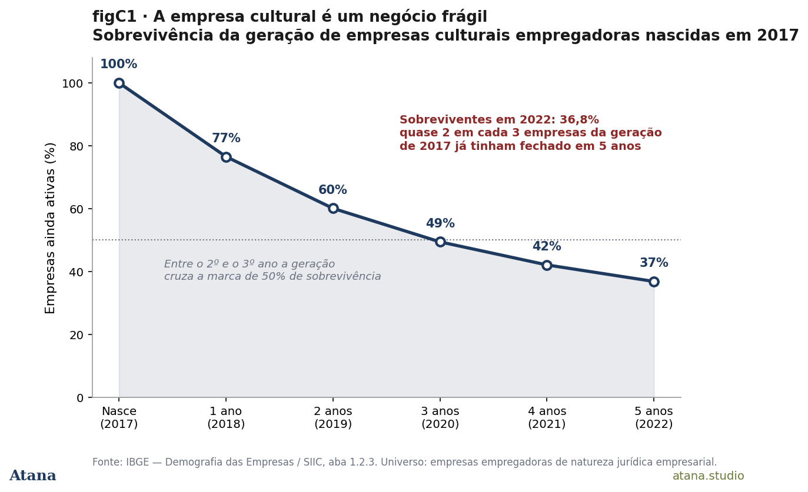
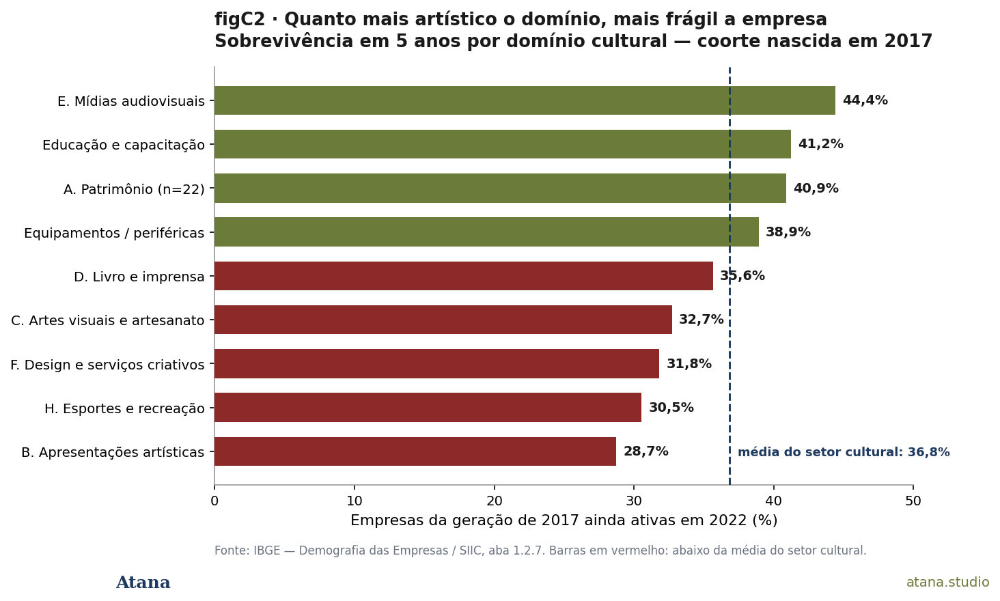
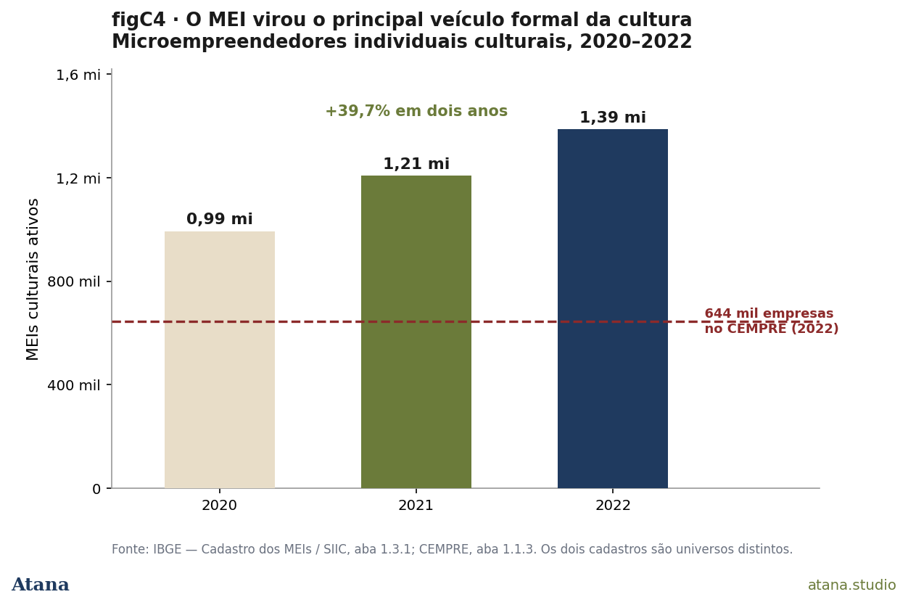
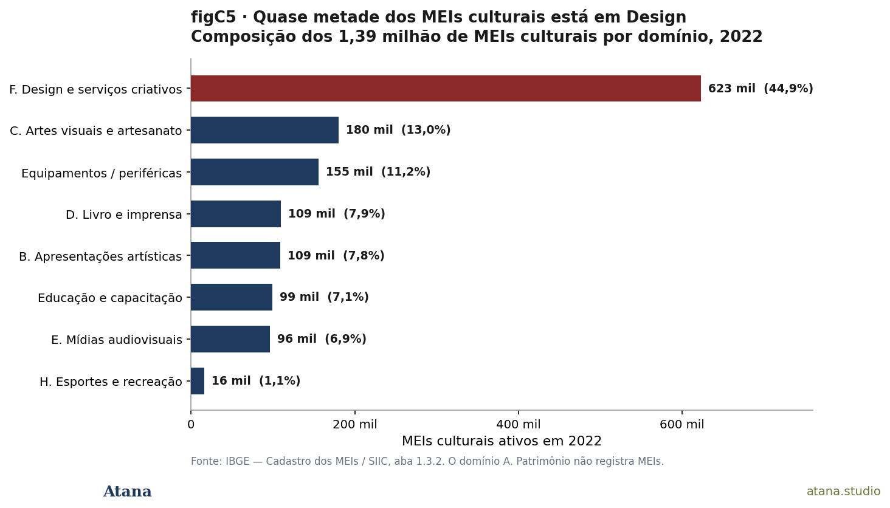
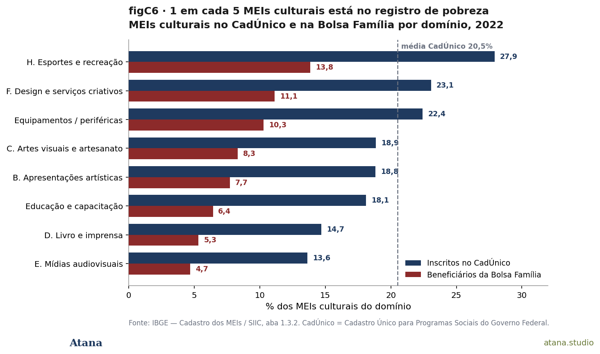

CEMPRE × MEIs: a formalização para baixo da economia cultural brasileira
Os cadastros do IBGE mostram que duas em cada três empresas culturais fecham antes de cinco anos (coorte 2017: 36,8% de sobrevivência) e que o setor ganhou 395 mil microempreendedores individuais entre 2020 e 2022 (+39,7%) — 1,39 milhão de MEIs culturais hoje, contra 644 mil organizações no CEMPRE. Entre os MEIs culturais, 20,5% estão inscritos no CadÚnico e 9,2% recebem Bolsa Família. A economia cultural brasileira se formaliza, mas para baixo: o MEI é o ponto em que formalização e precarização se encontram. Preprint citável.
Indicativo
A economia cultural brasileira tem hoje cerca de 644 mil organizações formalmente constituídas no Cadastro Central de Empresas (CEMPRE) e 1,39 milhão de microempreendedores individuais no Cadastro dos MEIs; isso representa duas vezes mais MEIs do que empresas. Dos dois universos, o que cresce é o segundo: os MEIs culturais saltaram de 992,9 mil (2020) para 1.387,5 mil (2022) — +39,7% em apenas dois anos. Das empresas culturais empregadoras nascidas em 2017, apenas 36,8% ainda estavam ativas em 2022: duas em cada três fecharam antes de cinco anos. E entre os MEIs culturais, 20,5% estão inscritos no CadÚnico, 9,2% recebem Bolsa Família.
O retrato que emerge da leitura combinada desses três cadastros (CEMPRE, Demografia das Empresas e Cadastro dos MEIs, todos publicados pelo IBGE no capítulo 1 do Sistema de Informações e Indicadores Culturais) é desconfortável e coerente. A economia cultural brasileira está, de fato, se formalizando. Mas a formalização acontece para baixo: na direção do MEI unipessoal, da microempresa frágil, do CNPJ que coexiste com a inscrição em programa de transferência de renda. "Formalização" e "precarização" não são opostas no setor cultural brasileiro; o MEI é exatamente o ponto em que ambos se encontram.
Por que importa
A política cultural brasileira de fomento — Lei Rouanet, editais, prêmios — é desenhada em torno do projeto e da produção. Os dados do CEMPRE e dos MEIs sugerem que ela protege o elo errado da cadeia, ainda que o fomento seja fundamental. O gargalo do setor não é a falta de produção, é a falta de durabilidade da estrutura empresarial e de base econômica do trabalhador formalizado como MEI.
A leitura importa por três razões. Primeiro, é a primeira lente do corpus Atana que conta organizações, e não pessoas (PNADC) nem vínculos (RAIS), mas em que estrutura empresarial o trabalho cultural acontece e por quanto tempo essa estrutura dura. É a pergunta que faltava para fechar o quadro do setor formal do Br. Segundo, o MEI é hoje a figura jurídica numericamente dominante do trabalho cultural brasileiro e não é tratado como categoria de política cultural por nenhum instrumento, pois fica entre o vão da política cultural (que pensa em projetos) e o da política de microempreendedorismo (que pensa em geral, não em cultura). Terceiro, o cadastro administrativo permite identificar com precisão o gradiente entre domínios culturais, e este gradiente é exatamente o inverso do discurso celebratório: os domínios mais próximos da criação artística são os que menos sobrevivem como negócios.
As duas lentes — CEMPRE e Cadastro dos MEIs
Esta análise lê o setor cultural por meio de dois cadastros administrativos distintos, ambos compilados pelo IBGE no capítulo 1 do SIIC e que não compõem o mesmo universo.
-
CEMPRE — Cadastro Central de Empresas + Demografia das Empresas. Registra o estoque de empresas e outras organizações formalmente constituídas, o que inclui administração pública, entidades sem fins lucrativos e empresas empregadoras. As séries de natalidade, mortalidade e sobrevivência referem-se ao subconjunto de empresas empregadoras de natureza jurídica empresarial, que constitui o recorte mais estreito do cadastro, mas o único para o qual o IBGE calcula a demografia. Total cultural 2022: 644.050 organizações no CEMPRE, 140.848 empresas empregadoras na Demografia.
-
Cadastro dos MEIs. Registra os microempreendedores individuais, figura jurídica unipessoal criada pela Lei Complementar 128/2008. O MEI é, por definição, uma firma de uma pessoa só, com teto de faturamento e direito a CNPJ, previdência e nota fiscal. Total cultural 2022: 1.387.480 MEIs, que sustentavam coletivamente apenas 8.586 empregados, confirmando que o MEI cultural é, em larguíssima maioria, formalização do trabalho de uma pessoa só.
Os totais dos dois cadastros não se somam, pois são universos distintos, com critérios de elegibilidade e naturezas jurídicas diferentes. A comparação entre eles é indicativa de escala relativa da figura jurídica, não adição contábil. Mas a comparação é eloquente, pois o principal veículo formal do trabalho cultural brasileiro, hoje, não é a empresa, mas sim o MEI.
O que os dados dizem
1. Duas em cada três fecham em cinco anos
Das empresas culturais empregadoras nascidas em 2017, apenas 36,8% ainda estavam ativas em 2022. A mortalidade é precoce e implacável: 23,5% não chegam ao primeiro aniversário; ao final do segundo ano, 40% já fecharam; entre o segundo e o terceiro ano a geração cruza a marca de 50%. O que sobra ao fim de cinco anos é pouco mais de um terço da geração original.

Figura 1 — Curva de sobrevivência da coorte de empresas culturais empregadoras nascidas em 2017, ano a ano até 2022. Cinco anos depois, 36,8% seguem ativas; a queda é mais íngreme entre o 2º e o 3º ano, quando a geração cruza a marca de 50%. Universo: empresas empregadoras de natureza jurídica empresarial. Fonte: IBGE, Demografia das Empresas, Tabela 1.2.3.
2. Quanto mais artístico o domínio, mais frágil a empresa
A fragilidade não se distribui por igual. Há um gradiente nítido e ele é desconfortável para importantes setores: os domínios mais próximos da criação artística são os que menos sobrevivem como negócio. No topo da durabilidade está E. Mídias audiovisuais e interativas (44,4% de sobrevivência em cinco anos), o domínio mais industrializado e capitalizado da cultura. Logo abaixo, Educação e capacitação (41,2%) e Equipamentos e materiais de apoio (38,9%) — atividades de infraestrutura e ensino, mais próximas de um negócio convencional. No fundo da tabela estão B. Apresentações artísticas e celebrações (28,7%), H. Esportes e recreação (30,5%), F. Design e serviços criativos (31,8%) e C. Artes visuais e artesanato (32,7%) — todos abaixo da média do setor.

Figura 2 — Vê-se aqui a sobrevivência em cinco anos das empresas culturais empregadoras nascidas em 2017, caracterizadas por domínio. Apresentações artísticas (28,7%) é o domínio mais frágil; Mídias audiovisuais (44,4%) é o mais durável. A política cultural costuma celebrar exatamente os domínios que esta tabela identifica como os mais instáveis para se manter um negócio aberto. Caveat: o domínio Patrimônio aparece em 40,9% mas com coorte de apenas 22 empresas — número frágil demais para sustentar conclusão. Fonte: IBGE, Demografia das Empresas, Tabela 1.2.7.
Apresentações artísticas, que é o domínio mais emblematicamente cultural, o do palco e do espetáculo, é o que pior sobrevive como empresa. A leitura é direta: a política cultural costuma celebrar exatamente os domínios que esta tabela identifica como os mais instáveis para manter um negócio aberto e vender a imagem da diversidade.
3. Um setor de alta rotatividade
A contrapartida da mortalidade alta é a natalidade alta. Em 2022, a taxa de natalidade de empresas culturais empregadoras foi de 15,5% — uma em cada sete empresas ativas tinha menos de um ano. A taxa vinha subindo: 10,8% em 2017, 13,0% em 2019, 15,5% em 2022. A mortalidade, na janela disponível (2017–2020), caiu de 13,1% para 9,9%.
O resultado não é um setor em colapso, mas sim um setor em rotatividade alta. Muita empresa abre, muita empresa fecha, e o estoque se renova continuamente sem acumular durabilidade. A natalidade é mais intensa justamente nos domínios mais frágeis: F. Design lidera a criação de empresas, com taxa de natalidade de 24,6% em 2022. Cria-se muito, e o que se cria é, em boa parte, o que menos dura. Um setor assim é dinâmico nas estatísticas de fluxo e precário nas de estoque; e é por isso que medir só o crescimento esconde metade da história. Temos falado correntemente sobre a necessidade de muitas lentes.
4. O salto dos MEIs: mais 395 mil em dois anos
Se a empresa cultural é frágil, o que vem crescendo em seu lugar é o microempreendedor individual. Os MEIs culturais saltaram de 992.882 em 2020 para 1.387.480 em 2022, o que representa um crescimento de +39,7% em apenas dois anos. No mesmo movimento, a participação dos MEIs culturais no total de MEIs do país subiu de 8,96% para 9,52%.

Figura 3 — Estoque de MEIs culturais, 2020–2022, em milhares. Crescimento de 39,7% em dois anos (992,9 mil → 1.387,5 mil), comparado ao estoque de referência do CEMPRE em 2022 (644 mil organizações culturais formalmente constituídas — universo distinto). O MEI cultural já é o dobro do CEMPRE em número de cadastros, mas sustenta apenas 8.586 empregados — confirmando que é, em larguíssima maioria, formalização do trabalho de uma pessoa só. Fonte: IBGE, Cadastro dos MEIs, Tabela 1.3.1; CEMPRE, Tabela 1.1.3.
A escala dessa figura jurídica é o ponto. O CEMPRE registra 644 mil organizações culturais; o Cadastro dos MEIs registra 1,39 milhão, ou seja, mais do que o dobro. Mesmo lembrando que são cadastros distintos e não somáveis, a comparação é totalmente factível: o principal veículo formal do trabalho cultural brasileiro hoje não é a empresa, mas sim o MEI unipessoal. E é um veículo que quase não emprega. O MEI não é uma empresa pequena; é a formalização jurídica do trabalho de uma pessoa só.
5. O boom é, sobretudo, de Design
Quase metade dos MEIs culturais — 622.734, ou 44,9% — está concentrada em um único domínio: F. Design e serviços criativos. Nenhum outro chega perto: C. Artes visuais e artesanato vem em segundo, com 13,0%, e Equipamentos/periféricas em terceiro, com 11,2%. O domínio A. Patrimônio não registra um único MEI.

Figura 4 — Composição dos MEIs culturais por domínio, 2022. F. Design e serviços criativos concentra 44,9% (622.734 MEIs); A. Patrimônio cultural não registra um único MEI. A concentração espelha o "boom do Design" que a Atana Note #09 documentou na RAIS (90% concentrado no CNAE 73190 catch-all de publicidade), em dois cadastros administrativos independentes. Fonte: IBGE, Cadastro dos MEIs, Tabela 1.3.2.
Essa concentração conversa diretamente com a Atana Note #09. Lá, nos registros da RAIS, o domínio Design havia crescido 139% em doze anos, mas 92% desse crescimento estava na CNAE 73190, o código guarda-chuva de publicidade de baixo salário. Aqui, no cadastro dos MEIs, o mesmo domínio Design é o que mais concentra microempreendedores individuais. As duas leituras, em cadastros administrativos independentes, apontam para a mesma coisa: o "boom do Design" da economia criativa brasileira é, em boa medida, um boom de trabalho unipessoal formalizado como MEI. É expansão de número de cadastros, não necessariamente de atividade econômica robusta ou de emprego.
6. Um em cada cinco no registro de pobreza
A formalização como MEI costuma ser apresentada como uma conquista, como algo do tipo "saída da informalidade", "acesso a CNPJ", "previdência" e "emissão de nota". O capítulo 1 do SIIC traz um indicador que complica essa leitura. 20,5% dos MEIs culturais, um em cada cinco, estão inscritos no CadÚnico, o Cadastro Único para Programas Sociais do governo federal; e 9,2% são beneficiários da Bolsa Família.

Figura 5 — Inscrição em CadÚnico e Bolsa Família entre MEIs culturais por domínio, 2022. Média setorial: 20,5% no CadÚnico, 9,2% na Bolsa Família. O sinal é mais forte exatamente onde o boom é maior: Design 23,1% / 11,1%; Esportes 27,9% / —. Os domínios menos pobres são os mesmos que sobrevivem melhor como empresa: Mídias audiovisuais (13,6%) e Livro e imprensa (14,7%). Fonte: IBGE, Cadastro dos MEIs, Tabela 1.3.2.
O CadÚnico é o instrumento que identifica famílias de baixa renda elegíveis a programas de transferência. Que um quinto dos microempreendedores culturais esteja nele indica que, para uma parcela expressiva, o MEI não é o degrau de uma trajetória de ascensão. Trata-se, na verdade, da face formal de uma renda que continua baixa o bastante para qualificar a família à assistência social. A formalização aconteceu; a prosperidade, não necessariamente.
O indicador é mais forte exatamente onde o boom é maior. Em F. Design e serviços criativos (o domínio de 45% dos MEIs) 23,1% estão no CadÚnico e 11,1% recebem Bolsa Família, ambos acima da média do setor. Em H. Esportes e recreação a inscrição no CadÚnico chega a 27,9%. Os domínios de cadastro mais baixo são E. Mídias audiovisuais (13,6%) e D. Livro e imprensa (14,7%) — os mesmos que, na Seção 2, sobreviviam melhor como empresa. O gradiente é coerente de ponta a ponta: os domínios onde a estrutura empresarial é mais frágil são também aqueles onde o microempreendedor individual é mais pobre.
A formalização para baixo
Lidos juntos, os dois cadastros (CEMPRE de empresas que duram pouco, Cadastro de MEIs que multiplicam) descrevem a mesma reconfiguração estrutural por dois ângulos. A empresa cultural empregadora típica nasce e morre em ciclo curto; o trabalhador cultural típico formaliza-se como MEI unipessoal de baixa renda. Os dois fatos coexistem no mesmo setor, frequentemente no mesmo domínio, e em alguns casos no mesmo trabalhador, isto é, quem fechou uma firma empregadora pode reaparecer no ano seguinte como MEI.
O trabalho cultural brasileiro está, de fato, se formalizando, mas se formalizando para baixo: na direção do MEI, da unidade de uma pessoa só, da microempresa frágil, e não na direção do emprego assalariado estável dentro de empresas duráveis. "Formalização" e "precarização" não são opostos no setor cultural brasileiro; o MEI é exatamente o ponto onde os dois se encontram. Um trabalhador que troca o trabalho informal por um CNPJ de MEI aparece nas estatísticas como um ganho de formalidade, mas pode, ao mesmo tempo, continuar inscrito no CadÚnico. Os dois fatos são verdadeiros simultaneamente, e é a leitura conjunta que os reconcilia.
Cruzamento com a Atana Note #09 (RAIS)
A Atana Note #09 documentou, no âmbito dos vínculos formais de emprego (RAIS, 2014–2025), uma década de erosão silenciosa: o número de contratos voltou ao nível de 2014, mas o salário real caiu 7,3%, com Patrimônio cultural perdendo um terço e Design perdendo 18%. A Note #09 mostrou também que 92% do crescimento de vínculos do domínio Design se concentra na CNAE 73190, o catch-all de publicidade de baixo salário.
Esta Note #10 acrescenta a face empresarial do mesmo processo. O "boom do Design" que a RAIS captura como inchaço do catch-all 73190 é, no Cadastro dos MEIs, 622.734 microempreendedores individuais: 44,9% do total de MEIs culturais. Dois cadastros administrativos independentes (RAIS e Cadastro dos MEIs), com critérios e universos diferentes, apontam para a mesma fronteira estrutural: o domínio onde o setor formal mais cresceu é também o mais precarizado.
A pergunta que a Note #09 deixou em aberto: por que tantos MEIs culturais são frágeis e por que o domínio que mais cresce em vínculos formais é o que mais perde em salário real, encontra aqui a resposta complementar. A economia cultural brasileira não está em colapso: ela está, em larga medida, trocando de figura jurídica. Sai da CLT empregadora durável (que tinha 1,07 milhão de vínculos em 2014 e tem 1,09 milhão em 2025 com salário real 7% menor) e entra no MEI unipessoal (que saltou 40% em dois anos e tem um em cada cinco no CadÚnico). As duas pontas se encontram no MEI.
Implicações para política
1. Instrumentos de sustentação da empresa, não apenas de financiamento de projetos. Se a empresa cultural típica não sobrevive cinco anos, a Lei Rouanet, o Fundo Nacional de Cultura, e os outros programas existentes, os quais foram desenhados para financiar produção de projeto pontual, estão protegendo o elo errado da cadeia. O financiamento é necessário, obviamente. A curva de sobrevivência da Figura 1 é mais íngreme entre o 1º e o 3º ano; é nessa janela que apoio a fluxo de caixa, crédito subsidiado e capacitação em gestão teriam maior efeito marginal. Modelos como o BNDES Procult e linhas de crédito setoriais subutilizadas precisam ser dimensionados e divulgados.
2. O MEI cultural como categoria de política pública. O MEI é hoje o principal veículo formal do setor e não é reconhecido como tal por nenhum instrumento de política cultural. Fica no vão entre a política de cultura (que pensa em projetos) e a do microempreendedorismo (que pensa em geral, não em cultura). O dado do CadÚnico — 20,5% dos MEIs culturais — recomenda olhar o MEI cultural pela lente da proteção social, não só do empreendedorismo. Acesso facilitado a microcrédito, isenção temporária de taxa MEI para domínios com alta incidência de Bolsa Família, e canal de transição entre MEI e MEI Empresário (com até um empregado) são instrumentos disponíveis e não acionados.
3. Foco nos domínios frágeis. Apresentações artísticas, Artes visuais e Design combinam a pior sobrevivência empresarial com a maior incidência de MEIs em registro de pobreza. São os domínios onde a distância entre o discurso celebratório da economia criativa e a condição material de quem a sustenta é mais larga e onde a política bem desenhada teria o maior retorno. Editais com cláusula de continuidade plurianual, residências artísticas de longa duração com piso de remuneração e fomento à estruturação cooperativa (modelo de cooperativa cultural, sindicato setorial, agência coletiva de gestão de carreira) são frentes pouco exploradas.
4. Acompanhamento estatístico do MEI cultural. O Cadastro dos MEIs do SIIC só tem série de três anos (2020–2022). Para política pública responsiva, é necessário acompanhamento anual contínuo da escala, da composição por domínio e da incidência de CadÚnico/Bolsa Família. A extensão da série para 2023–2024–2025 já existe no Cadastro Nacional de MEIs (Receita Federal) e na Plataforma Empresarial Brasileira, mas falta apenas a tabulação cultural específica, que pode ser produzida pelo IBGE ou pelo MinC com baixo custo.
Fontes
- IBGE — Sistema de Informações e Indicadores Culturais (SIIC) — capítulo 1, Atividades culturais formalmente constituídas, arquivo
1_atividades_formalmente_constituidas.xlsx, edição 2024 (ano-base 2022). Consolida três cadastros administrativos: - CEMPRE — Cadastro Central de Empresas, IBGE (Tabela 1.1.3 — total cultural 644.050 organizações em 2022).
- Demografia das Empresas — IBGE (Tabelas 1.2.1, 1.2.2, 1.2.3, 1.2.7 — natalidade, mortalidade, sobrevivência por coorte e por domínio).
- Cadastro dos MEIs — Receita Federal / IBGE (Tabelas 1.3.1, 1.3.2, 1.3.4 — série 2020–2022, composição por domínio, indicadores socioeconômicos).
- Atana Note #09 — RAIS × PNADC: a década da erosão silenciosa do contrato cultural formal brasileiro, junho de 2026.
Metodologia detalhada e verificação de identidades contábeis (Centrais + Periféricas = Total, todas conferem) em analise_12_cempre_setor_formal.md §7. Reprodutibilidade via leitura openpyxl da xlsx original; gráficos figC1–figC6 gerados por gen_a12_charts.py a partir de valores transcritos do xlsx.
Caveats centrais. (i) Os três cadastros são universos distintos — CEMPRE, Demografia e Cadastro dos MEIs — e seus totais não se somam. Comparações entre eles indicam escala relativa, não adição contábil. (ii) Taxas de sobrevivência referem-se apenas a empresas empregadoras de natureza jurídica empresarial (Demografia das Empresas), recorte mais estreito que o CEMPRE. (iii) Série de mortalidade encerra em 2020 por exigir defasagem de observação. (iv) O domínio Patrimônio aparece com coortes muito pequenas (22 empresas nascidas em 2017; nenhum MEI registrado) — percentuais são indicativos, não conclusivos. (v) Cadastro administrativo: sem coeficiente de variação.
Como citar
ABNT. SILVA JUNIOR, João Roque da. CEMPRE × MEIs: a formalização para baixo da economia cultural brasileira. Atana Notes, n. 10, jun. 2026. Disponível em: https://atana.studio/notes/10/. Acesso em: [data].
APA 7. Silva Junior, J. R. da. (2026, junho). CEMPRE × MEIs: a formalização para baixo da economia cultural brasileira (Atana Note No. 10). Atana. https://atana.studio/notes/10/
Chicago (author-date). Silva Junior, João Roque da. 2026. "CEMPRE × MEIs: a formalização para baixo da economia cultural brasileira." Atana Notes, no. 10 (junho). https://atana.studio/notes/10/.
BibTeX.
@techreport{silvajunior2026cempre,
author = {{Silva Junior}, Jo{\~a}o Roque da},
title = {{CEMPRE} {\texttimes} {MEIs}: a formaliza{\c{c}}{\~a}o para baixo da economia cultural brasileira},
institution = {Atana},
type = {Atana Note},
number = {10},
year = {2026},
month = {jun},
url = {https://atana.studio/notes/10/},
note = {Preprint cit{\'a}vel; paper acad{\^e}mico completo em prepara{\c{c}}{\~a}o.}
}
Cita-as (forma curta para texto corrido). Silva Junior (2026), Atana Note #10.
Sobre a Atana. A Atana é uma consultoria de políticas públicas voltada à economia criativa latino-americana na era agêntica. As Atana Notes são peças analíticas curtas, citáveis, baseadas no corpus atana-data (~17 fontes consolidadas, ~65 milhões de linhas) e publicadas em atana.studio/notes/. Esta nota é a versão preprint da análise correspondente; a versão estendida, com pacote de figuras completo, séries históricas e apêndice metodológico, será submetida a periódico de economia da cultura no final de 2026 / início de 2027.
Versão 1.0 — junho de 2026. Companheira da Atana Note #09 (RAIS × PNADC).